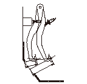
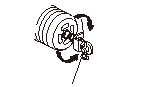
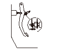
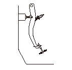

ブレーキ ペダル/スイッチの点検、調整
ペダルの高さ
クリップを外してフロア カーペットとインシュレータ切欠き部をめくりフロアを鉄板面にする。
踏込んだときの床板とのすき間
エンジンを始動し、2－3回ブレーキ ペダルを踏込んだ後、ブレーキ ペダルを踏んだときの床板とのすき間（A）を測定する。
床板とのすき間（踏力196N（20.0kgf）時）:118.5mm以上
ペダルの高さはペダル右側面の中央（B）から垂直に測定する。
踏込まないときのペダルの高さ
ブレーキ ペダルを踏まない状態で、床板からブレーキ ペダル踏面までの高さ（C）を測定する。
高さ:171.5mm以上

高さ調整
ペダル高さを上げる調整を行う場合、ブレーキ スイッチの損傷を防ぐためスイッチを外しておくこと。
プッシュ ロッドのヨーク ロックナット（A）をゆるめ、プッシュ ロッド（B）を回してペダル高さを調整する。
ヨーク ロックナットを締付ける。

ブレーキ スイッチ（A）のねじ部端面（B）がペダル ストップ ブラケット（C）に当たるまでスイッチを押込み、時計方向に45°まわしてロックする。ブレーキ スイッチがロックされることでペダル ストップ ブラケット間のすき間は0.7mmに自動調整される。
•
調整後、ペダルの遊びがあることを確認する。
遊びがない場合、ブレーキの引きずりが起こる場合があるので、必ず点検する。
•
調整後、ブレーキ ライトの作動が正常であることを確認する。

ペダルの遊び
エンジンを停止させた状態で、2－3回ブレーキ ペダルを踏込んだ後に、ブレーキ ペダルを指で押して抵抗を感じるまでの移動量（遊び）（A）を測定する。
遊び:
1－5mm

 ペダルの高さはペダル右側面の中央（B）から垂直に測定する。
ペダルの高さはペダル右側面の中央（B）から垂直に測定する。